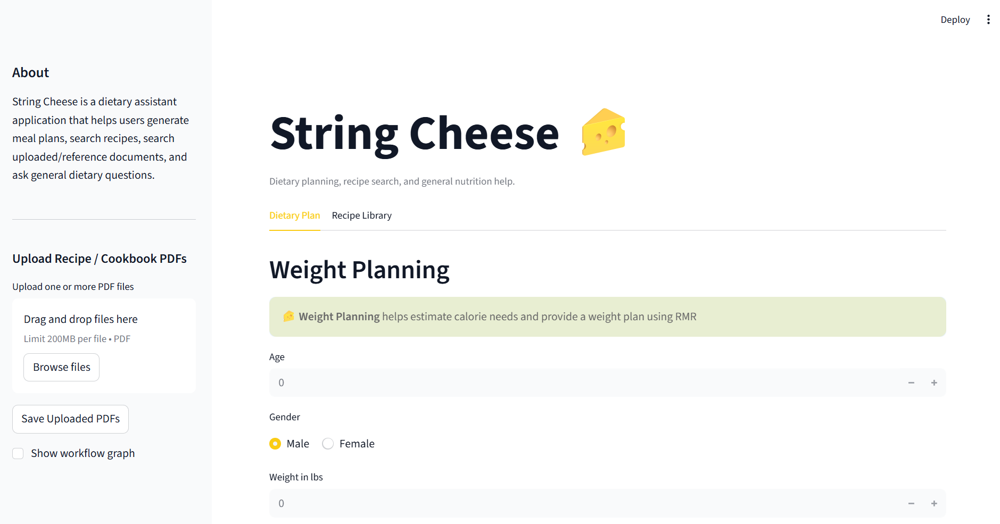
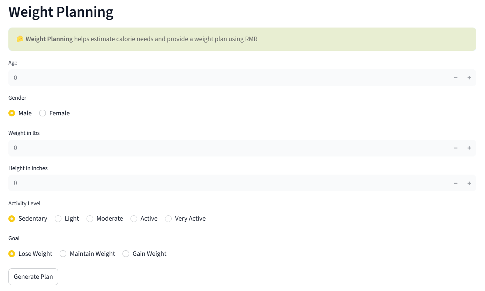
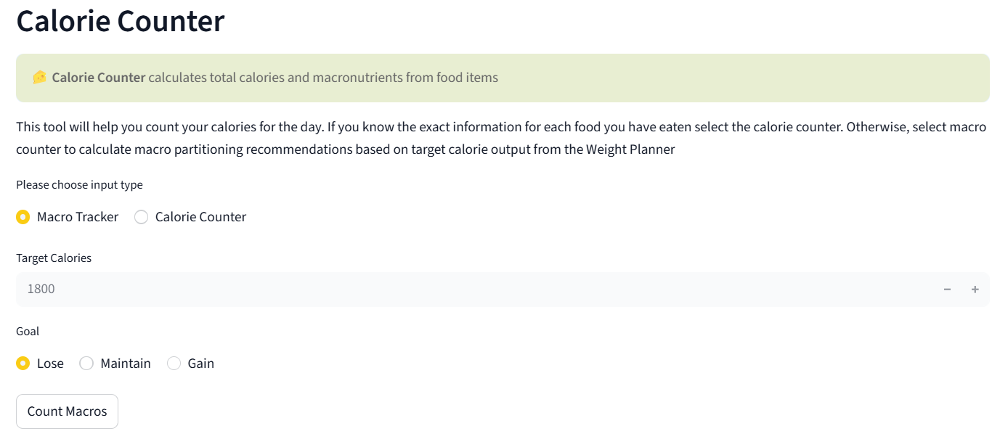
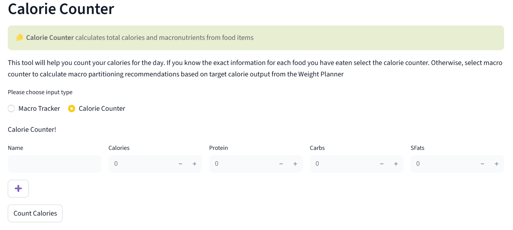
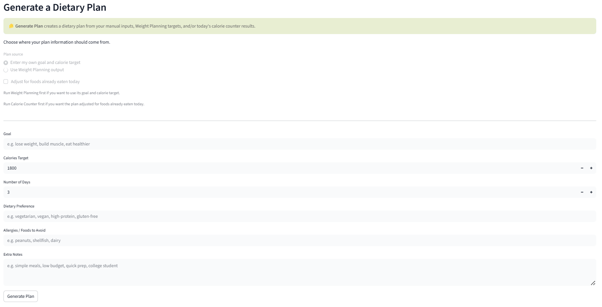
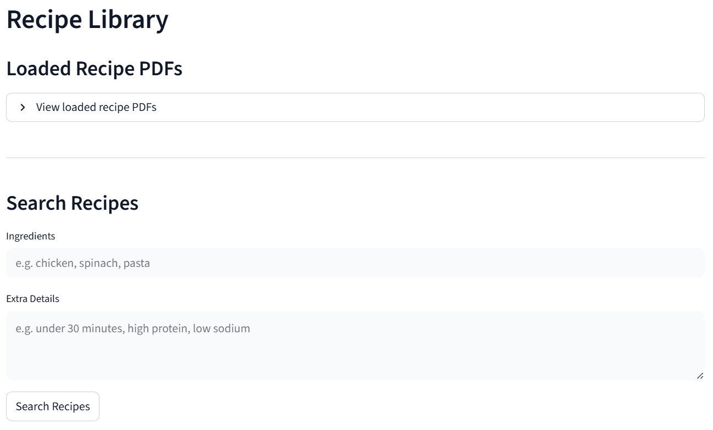
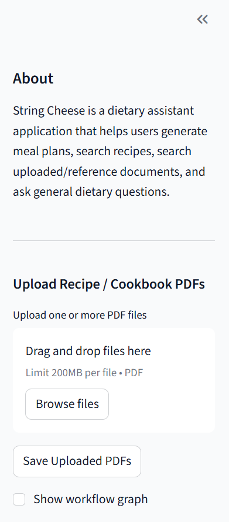

String Cheese: AI Dietary Assistant
A Streamlit, LangGraph, and Gemini-powered dietary planning assistant
Overview
String Cheese is an AI-powered dietary assistant that helps users plan meals, track nutrition, and search recipes from both built-in and user-uploaded cookbooks.
The project was created for Creating with AI in the Loop, a course focused on building software while actively collaborating with AI tools. String Cheese combines deterministic nutrition tools with LLM-generated planning and PDF-based recipe retrieval.
Team
- Freddy Melges
- Gillian Donley
- Raighen Ly
Project Goals
String Cheese functions as a “pocket dietitian” that supports users with:
- Personalized dietary plans
- Weight planning for losing, maintaining, or gaining weight
- Calorie tracking
- Macro tracking
- Recipe search from PDFs
- Custom cookbook PDF uploads
The goal of the project was to explore how AI can be used both inside an application and during the development process.
Application Screenshots







Main Features
Dietary Plan Generator
The dietary plan generator creates multi-day meal plans based on user inputs such as:
- Goal: lose, maintain, or gain weight
- Target calories
- Dietary preferences
- Allergies
- Custom notes
Generated plans use Gemini while following built-in safety constraints.
Weight Planning Tool
The weight planning tool calculates:
- Resting Metabolic Rate
- Maintenance calories
- Target calorie intake
This helps users estimate a calorie goal based on their body information and dietary goal.
Calorie Counter
The calorie counter tracks total calories and macronutrients from user input. It can support daily, weekly, or monthly tracking.
Macro Tracker
The macro tracker breaks calorie targets into:
- Protein
- Carbohydrates
- Fats
The distribution can be adjusted based on the user’s goal.
Recipe Library and PDF Upload
String Cheese includes preloaded recipe documents and also allows users to upload their own cookbook PDFs. Uploaded recipes are indexed and made searchable.
Recipe Search
Recipe search allows users to search for meals using ingredients and constraints such as:
- High protein
- Quick meals
- Vegan meals
- Meals using specific ingredients
PDFs are parsed, indexed, searched, filtered, ranked, and then formatted into readable recipe results.
Technical Architecture
String Cheese uses a structured workflow built with LangGraph.
parse_input
↓
route_request
↓
tool-specific node
↓
format_response